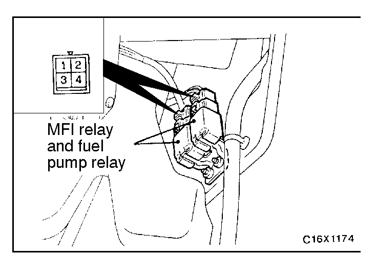
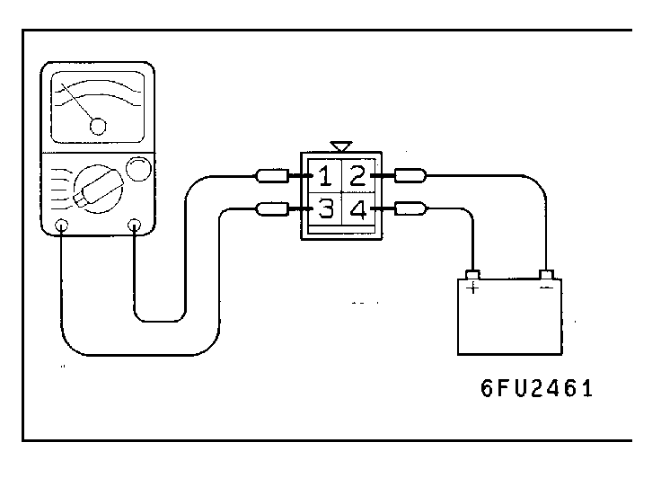

![[Previous]](https://mitsubishitechinfo.com/data/F24S/BUTTONS/fprevg.png)
![[Next]](https://mitsubishitechinfo.com/data/F24S/BUTTONS/fnextg.png)
 
MULTIPORT FUEL INJECTION (MFI) RELAY
AND FUEL PUMP RELAY CHECK
1.Remove the relay.
2.Check the continuity between the MFI relay terminals.
Inspection terminals
Continuity
2- 4
Continuity (Approx. 70 Ω)
3.Use the jumper leads to connect relay terminal 4 to the battery (+) terminal and terminal 2 to the battery (-) terminal.
4.Check the continuity between relay terminals 1 - 3 while connecting and disconnecting the jumper lead at the battery (-) terminal.
Jumper lead
Continuity between terminals 1 - 3
Connected
Continuity (0Ω)
Disconnected
No continuity
5.If there is a defect, replace the MFI relay or fuel pump relay.